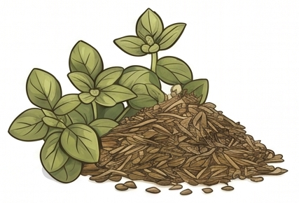
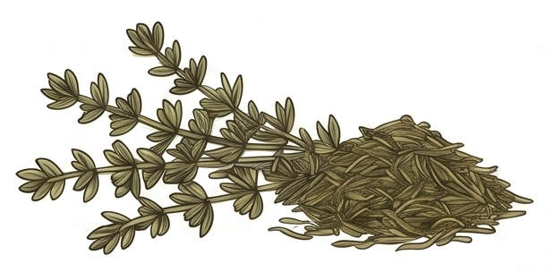
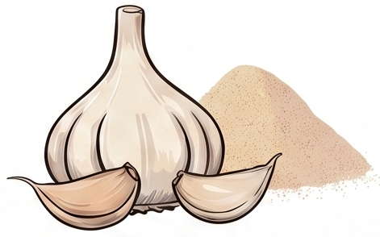

If you're raising backyard chickens, you already know that a healthy flock starts with what they eat. More and more flock owners are turning to natural herbs to support their birds — and for good reason. These plants have been used for centuries to promote gut health, immune strength, and parasite resistance. Here are four of the most powerful herbs you can add to your chickens' routine.

1. Oregano — Nature's Antibiotic
Oregano is one of the most researched herbs in poultry health. It contains carvacrol and thymol — two natural compounds with powerful antimicrobial properties. Studies have shown that oregano can help reduce harmful gut bacteria like Salmonella and E. coli, support a balanced microbiome, and even reduce the need for antibiotics in commercial flocks.
How to use it: Mix dried oregano into your flock's feed daily, or add a few drops of oil of oregano to their water once a week.

2. Thyme — The Respiratory Herb
Thyme is packed with antioxidants and has strong antimicrobial and antifungal properties. For chickens, it's particularly valued for supporting respiratory health — a common concern in backyard flocks, especially during wet or cold seasons. Thyme also promotes healthy digestion and helps reduce inflammation throughout the body.
How to use it: Hang fresh thyme bundles in the coop or mix dried thyme into feed. You can also brew a mild thyme tea and add it to their water.

3. Garlic — The Immune Booster
Garlic has been a cornerstone of natural animal health for generations. Its active compound, allicin, is a potent antimicrobial and antiparasitic agent. For chickens, garlic is known to strengthen the immune system, improve circulation, and act as a natural deterrent to internal parasites including worms. Many flock owners also report that garlic improves the overall vitality and energy levels of their birds.
How to use it: Crush 1–2 garlic cloves into a gallon of drinking water, or mix garlic powder into their feed at a ratio of about 2% of total feed weight.
4. Sage — The Antioxidant Protector
Sage is rich in antioxidants and has natural anti-inflammatory properties that make it a quiet powerhouse for flock health. It supports cognitive function in birds, promotes a healthy nervous system, and has been shown to help combat Salmonella and other harmful bacteria in the digestive tract. Sage also enhances feather quality and overall vitality.
How to use it: Add fresh or dried sage to nesting boxes or scatter it in the run. You can also mix dried sage into feed a few times per week.
The Bottom Line
Herbs aren't a replacement for good coop management and clean water, but they are a powerful, natural tool that every flock owner should consider. Whether you grow them in a garden patch, dry them from the market, or source them through a trusted supplement — your chickens will thank you.
At Prized Poultry, our HenGuard and Salmonella Defense blends are built around these exact herbs — carefully sourced, human-grade, and formulated specifically for backyard flocks. Shop HenGuard →
Frequently Asked Questions
What herbs are good for backyard chickens?
The four most effective herbs for backyard chickens are oregano, thyme, garlic, and sage. Oregano acts as a natural antibiotic with powerful antimicrobial properties. Thyme supports respiratory health and reduces inflammation. Garlic strengthens the immune system and fights internal parasites. Sage provides antioxidant protection and helps combat harmful gut bacteria.
Can chickens eat oregano every day?
Yes — dried oregano is safe and beneficial for chickens when added to their feed daily. Its active compounds carvacrol and thymol naturally suppress harmful bacteria like Salmonella and E. coli in the gut. Start with a small amount mixed into regular feed and increase gradually.
How do you naturally deworm chickens?
Garlic is the most well-known natural dewormer for chickens. Crush 1–2 garlic cloves into a gallon of drinking water two to three times per week, or add garlic powder to feed at about 2% of total feed weight. Garlic's allicin compound acts as a natural antiparasitic agent and can help deter internal worms over time.
How do I add herbs to my chicken's diet?
The easiest method is to mix dried herbs directly into their regular feed. You can also scatter fresh herb bundles in the coop or run for enrichment. For garlic, add crushed cloves or powder to drinking water. For thyme, hang fresh bundles in the coop — chickens will peck at them naturally. A pre-formulated herbal supplement like HenGuard takes the guesswork out entirely.
Are herbs a safe alternative to antibiotics for chickens?
Herbs like oregano and thyme have demonstrated antimicrobial properties in poultry research and are widely used as natural preventive supplements in backyard flocks. They are not a replacement for veterinary-prescribed antibiotics when a bird is actively sick, but they can serve as a powerful preventive tool for maintaining flock health and reducing the likelihood of bacterial issues.
What is the best natural supplement for backyard chickens?
A blend combining oregano, thyme, garlic, and sage provides the most comprehensive natural support — covering gut health, respiratory function, immune strength, and parasite resistance in one formula. Prized Poultry's HenGuard is formulated with exactly these herbs in human-grade quality, specifically for backyard flocks.